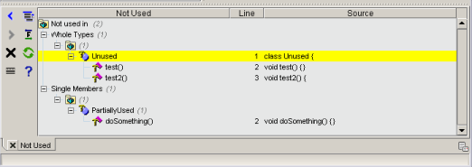

Not Used finds types, members and constructors that are not used inside a project. In most cases types, members, and constructors reported by Not Used can be safely deleted from the project. Note that there are limitations that you need to be aware of for RefactorIT. Not Used is to some degree the reverse of Where Used. To gain a better understanding of when types, members, and constructors are reported as not in use, you need to understand when methods are reported as used by Where Used.
Example:
class Unused {
void test() {}
void test2() {
test();
PartiallyUsed tmp = new PartiallyUsed();
tmp.test();
}
}
class PartiallyUsed {
void doSomething() {}
void test() {}
}
class Used {
/** @USED
*/
void markedUsed() {}
}

In this example, class Unused is not in use at all. As to class PartiallyUsed, its method doSomething is not in use either. But, as PartiallyUsed.test is in use, the whole class is not reported as not being in use; only method doSomething is being used. The method markedUsed of class Used is reported as used because it's has an @USED tag in its Javadoc. As a result, also the whole class is not reported as unused.
Excluding filters: A set of filters can be used to exclude certain classes or class members from being displayed as not used. Most of the filters exclude methods or classes that are usually invoked through reflection and thus not discovered as being used. Following filters are available:
Interface usage: Excludes methods which directly or indirectly override methods that are used.
Overriding methods: Excludes all overriding methods, i.e. methods that are declared in a supertype.
All public methods:Excludes all public classes and class members.
All protected methods: Excludes all protected classes and class members.
All accessor methods: Excludes bean property accessor methods. Only the method signature is checked. Can also check for indexed and mapped property accessor methods.
Members marked as used: Excludes all members that have a @used tag in javadoc. This is useful if you know that a class or method is being used, but it cannot be detected by RefactorIT.
Parts of servlet framework: Excludes all methods that override servlet methods, and all classes that implement or override servlet classes (javax.servlet.Servlet, javax.servlet.http.HttpServlet, javax.servlet.http.GenericServlet).
Parts of EJB framework: Excludes methods that are called by Enterprise JavaBeans (EJB) containers. Also excludes classes that implement EJB interfaces (EntityBean, SessionBean, MessageDrivenBean, EnterpriseBean).
JUnit test cases: Excludes classes that extend junit.framework.TestCase, all test* methods and setUp and tearDown methods. Also excludes public junit.framework.Suite suite() methods in all classes.
Members with certain names: Excludes fields and methods having specified names. The list of names can be edited in the filter panel.

More information on filters can be found here.
Results are reported in two major groups: types that are not in use at all and members and constructors that are not in use. A type is reported to be not in use only when no members of the type are used outside the type and the type is not used anywhere in code (for example, in new or throws statement). If a type is reported as not in use, you can probably delete it as a whole. If only members or constructors of a type are reported, you can only delete them.
Results can be saved to files in various formats, so they can be analysed by spreadsheet tools, or, for example, sent via e-mail to the development team as part of the nightly build. To do this - select "Export" on the Results Panel.